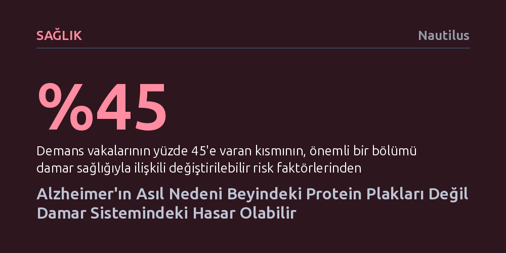

SAGLIK · Nautilus · 2026-09-11
Beyindeki amiloid plaklarını temizleyen yeni ilaçların bilişsel gerilemeyi durduramaması, Alzheimer'ın birincil nedeninin protein birikimi değil serebral damar hasarı olduğunu gösteriyor. Bulgular, damar iltihabının amiloid üretimini tetikleyerek nöron ölümüne yol açan asıl süreç olduğuna işaret ediyor.
Alzheimer'ı yalnızca beyinde çaresizce beklenen bir nöron kaybı olarak görmek yerine, yaşam boyu korunabilecek damar sağlığıyla önemli ölçüde engellenebilir bir dolaşım arızası olarak kavramayı sağlar.

On yıllardır tıp dünyası, Alzheimer hastalığının temelinde beyinde kümelenen beta-amiloid ve tau adı verilen toksik proteinlerin yattığı kabulüyle hareket etti. Beyni karmaşık bir motora benzetirsek, bu protein birikintileri motorun yüzeyini saran pas tabakası gibi görüldü. İlaç araştırmalarının neredeyse tamamı da bu mantık üzerine inşa edildi: Eğer beyindeki bu pas temizlenirse, hastaların hafızası ve bilişsel yetileri korunabilirdi.
Ancak son yıllarda geliştirilen ve beyindeki amiloid plaklarını neredeyse bütünüyle temizleyen lekanemab ve adukanumab gibi yeni nesil ilaçlar beklenen iyileşmeyi sağlayamadı. Plaklar laboratuvar ortamında yok edilmesine rağmen hastaların zihinsel gerilemesi eski ve ucuz tedavilerle hemen hemen aynı hızda sürmeye devam etti. Üstelik hiçbir zihinsel gerileme yaşamayan sağlıklı bireylerin beyinlerinde de yoğun amiloid plaklarına rastlanması, bu hipotezin temelini sarstı. Bütün bu veriler, amiloid plaklarının hastalığın asıl kaynağı değil, daha derinde yatan başka bir yapısal bozulmanın sonucu olduğunu düşündürüyor.
Pas benzetmesine geri dönersek; arabanın gövdesindeki pası sürekli kazımak paslanmaya yol açan sıvı sızıntısını ortadan kaldırmaz. Beynin motoru nöronlarsa, bu motora oksijen ve besin taşıyan yakıt boruları serebral damar sistemidir. Yaşlandıkça yıpranan bu boru hattında hasar oluştuğunda yakıt akışı aksar ve dokularda iltihaplanma başlar. Yeni bulgular, Alzheimer sürecini başlatan ilk kıvılcımın tam olarak bu damar sisteminde çaktığına işaret ediyor.
Yüksek tansiyon, damar sertliği veya tip 2 diyabet gibi kronik sorunlar, beyindeki kılcal damar yapısını tahrip ederek mikro kanamalara ve kan akımında belirgin bir düşüşe yol açıyor. Oluşan bu iltihaplanma beynin doğal temizleme mekanizmalarını felç ediyor. Beyin dokusu enfeksiyona ya da yangıya tepki olarak amiloid proteinini daha fazla üretirken, hasarlı dolaşım sistemi bu atıkları tahliye edemiyor ve neticede nöronlar oksijensiz kalarak ölüyor.
Damar kaynaklı bu çöküşün en somut kanıtlarından biri, kan-beyin bariyerinde meydana gelen hasardır. Normal şartlarda beyni kanda dolaşan yabancı maddelerden ve bağışıklık hücrelerinden koruyan bu hassas filtre, damarlar bozulduğunda geçirgen hale geliyor. Son araştırmalar, kandaki belirli hücrelerin merkezi sinir sistemine sızdığını gösteriyor; bu durum tıpkı su tesisatı sızdıran bir evin taşıyıcı duvarlarının zamanla çürümesine benziyor.
İleri görüntüleme teknikleri ve yapay zekâ destekli analizler, bu damar anormalliklerinin bilişsel belirtiler ortaya çıkmadan on yıllar önce başladığını ortaya koyuyor. Artık bilim dünyası, Alzheimer'ı tek bir proteinin başlattığı izole bir vaka olarak değil; damar hasarı, bağışıklık tepkisi ve mitokondri bozukluğunun birbirini tetiklediği çok faktörlü bir zincirleme reaksiyon olarak yorumluyor.
Damar hipotezinin getirdiği en umut verici bakış açısı, hastalığın önlenebilirliğine dair sunduğu somut fırsatlardır. Demans üzerine yapılan en kapsamlı küresel literatür incelemeleri, tüm vakaların yüzde 45'e varan bir bölümünün değiştirilebilir risk faktörleriyle ilişkili olduğunu gösteriyor. Bu risklerin başında ise doğrudan kalp ve damar sağlığını belirleyen etkenler geliyor: Yüksek LDL kolesterol, hareketsizlik, diyabet, sigara kullanımı, hipertansiyon ve obezite.
Beyindeki amiloid plaklarını hedef alan yüksek maliyetli ilaçların sınırlı etkisi karşısında, damar sistemini korumak elimizdeki en güçlü korunma kalkanı haline geliyor. Bilim insanları erken teşhis için kanda ve damarlarda yeni biyobelirteçler aramayı sürdürürken, bugünden yapılabilecek en etkili müdahale boru hattını sağlam tutmaktır. Yaşam boyunca fiziksel ve sosyal olarak aktif kalmak, tansiyonu kontrol altında tutmak ve metabolik sağlığı korumak, beyni onlarca yıl sonra karşılaşacağı yıkımdan korumanın en güvenilir yoludur.